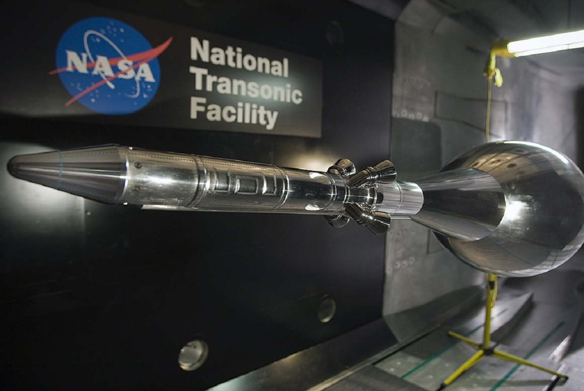
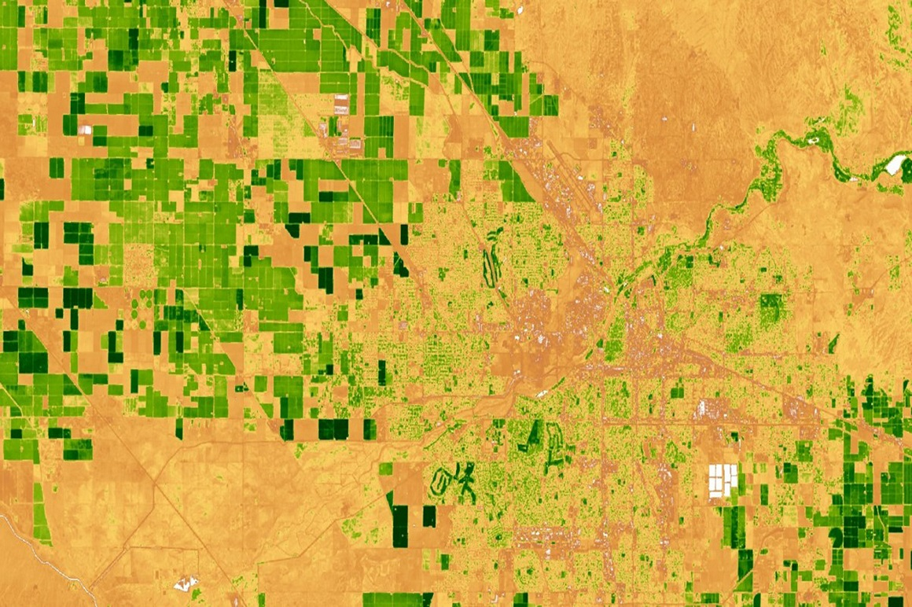

Jarell Perez
Home

Facility Management at the National Transonic Facility located at NASA Langley Research Center.
Used technologies such as ArcGIS Collector, ArcGIS Pro, versioned ArcSDE to create a 1:1 GIS model of a high-pressure, cryogenic, closed-circuit wind tunnel.
1933 Chesapeake-Potomac Hurricane Damage Visualization
A visualization of the economic damage the historic 1933 Chesapeake-Potomac Hurricane would cause in present-day Norfolk and Portsmouth.

Detecting Land Use Change using NASA's Earth Observations
A web application that tracks land use change using the relative green index developed for the National Aeronautics and Space Administration.
Voter Turnout and Warning Signs From the UK
A closer examination of "Brexit" and what it could teach America about the consequences of voter turnout.
The Geography of ODU Athletes
Where do ODU athletes come from?
ODU Virtual Campus Tour
An online campus map that highlights important buildings on ODU's campus.
The Expanding Gap in Virginia Between Those Who Register and Those Who Vote
Why is voter turnout decreasing? I decided to examine trends in Virginia.